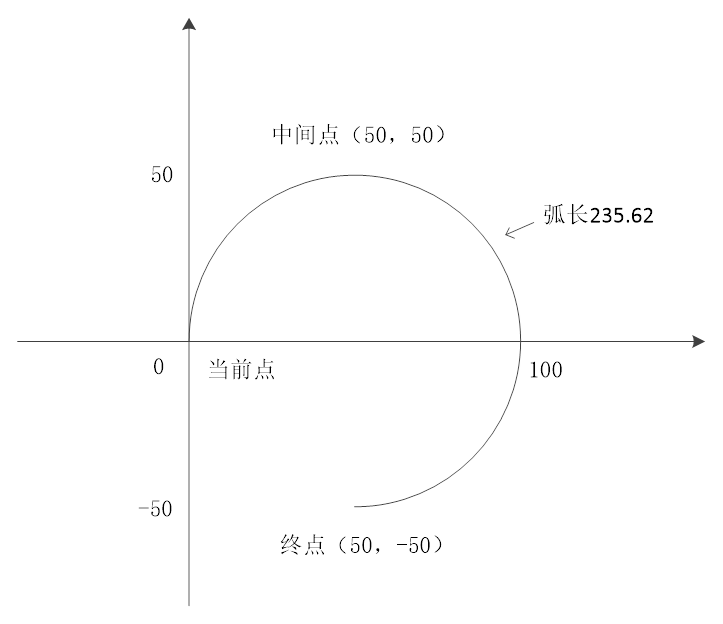
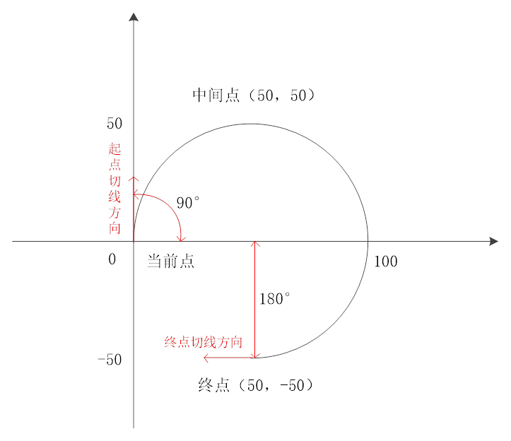
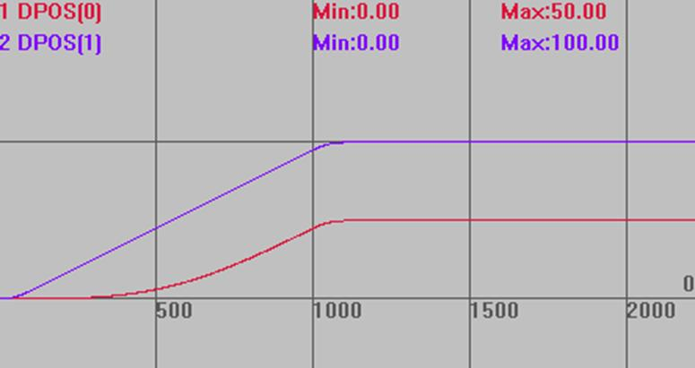

|
数学函数 | |||||||||||||
|
描述 |
计算各种运动指令中的参数，详细功能请看下方语法功能描述。 | ||||||||||||
|
语法 |
功能2：计算空间圆弧或空间直线上一定距离后的点的位置。 Table表参数按三点画圆模式填写其他两个点参数。 填写相对坐标，返回也是相对的位置。 语法：ZCUSTOM(2,tableend,tablemid,tableout,mode,vectdis) tableend：存储圆弧终点的table索引（3维坐标） tablemid：存储圆弧中间点的table索引, 与当前点一起构成圆弧的3个点（3维坐标） tableout；输出计算数据的table索引 mode：模式
vectdis：要计算的点相对mode的距离, 负数表示往前。圆弧模式时，正数表示顺时针，负数表示逆时针
功能6：计算空间圆弧的起点和终点的切线角度方向，弧度单位。 填写相对坐标，返回也是相对的位置。 语法：ZCUSTOM(6,tableend,tablemid,tableout) tableend：存储圆弧终点的table索引 tablemid：存储圆弧中间点的table索引, 与当前点一起构成圆弧的3个点 tableout：输出计算数据的table索引，依次输出:起点xy方向，起点Z方向，终点xy方向，终点Z方向，角度弧度单位
功能7：输入速度比例，计算MOVESLINK的从轴位置，主轴位置。 语法：ZCUSTOM(7, distance, link dist, start sp, end sp, 速度比例, tableout) distance：从连接开始到结束，跟随轴移动的距离，采用units单位 link dist：参考轴在连接的整个过程中移动的绝对距离，采用units单位 star sp：启动时跟随轴和参考轴的速度比例，units/units单位，负数表示跟随轴负向运动 end sp：结束时跟随轴和参考轴的速度比例，units/units单位，负数表示跟随轴负向运动 速度比例：需要计算的点的速度比例，与参数里面的起始结束点比例意义相同 tableout：正向找的从轴距离，正向找的主轴距离，从反向找的从轴距离，反向找主轴距离，占用4个TABLE（一段曲线，速度比例可能会有多个解）
功能8：MOVESLINK输入从轴位置，反算主轴的位置。 语法：ZCUSTOM(8,distance,link dist,start sp,end sp,distancemoved, tableout) distance：从连接开始到结束，跟随轴移动的距离 link dist：从连接开始到结束，主轴移动的绝对距离 start sp：起始脉冲速度比例 end sp：结束脉冲速度比例 distancemoved：从轴已经运动距离 tableout：输出table索引，输出对应主轴的位置，如多个解返回第一个
功能9：FLEXLINK输入从轴位置，反算主轴的位置。 语法：ZCUSTOM (9, base_dist, excite_dist, link_dist, base_in, base_out, excite_acc, excite_dec, distancemoved, tableout) base_dist：跟随轴匀速运动距离 excite_dist：跟随轴激励运动距离，这个与base_dist 相反的时候无法反算 link_dist：整个指令过程，跟随轴运动完成，主轴移动的距离 base_in：激励开始前，跟随轴运动距离占base_dist的百分比 base_out：激励完成后，跟随轴剩余运动距离占base_dist的百分比，两者相加不要超过100% excite_acc：激励过程中，跟随轴加速阶段运动距离占excite_dist的百分比，excite_dist为负值时，为减速阶段 excite_dec：激励过程中，跟随轴减速阶段运动距离占excite_dist的百分比，excite_dist为负值时，为加速阶段 distancemoved：从轴已经运动脉冲数 tableout：输出Table索引，输出对应主轴的位置，如多个解返回第一个
功能10：从工件坐标上的三点在原来坐标系上的坐标来计算FRAME_ROTATE旋转转换的参数，每个点要存储xyz的三个方向的坐标。 语法：ZCUSTOM (10, dtzero, dtx, dty, dtout) dtzero：工件零点在原来坐标系上的位置 dtx：工件坐标系X轴上的点在原来坐标系上的位置 dty：工件坐标系Y轴上的点在原来坐标系上的位置 dtout：输出TABLE索引，分别存储：X，Y，Z，RX，RY，RZ
功能12：根据圆弧的终点和半径来计算圆心。 语法：ZCUSTOM (12, xpos, ypos, radius, anticlock, dtout) xpos：X方向的相对坐标 ypos：Y方向的相对坐标 radius：半径，负数表示圆弧扇形角度大于180度，正数表示小于180度 anticlock：0―顺时针，1―逆时针 dtout：输出xy圆心相对距离，占用两个位置 注意：dtzero, dtx, dty, dtout是table索引，只用写索引不需要table也写入，table存的是三个方向的的x.y,z，用于机械手算法时，要填入的是虚拟轴的坐标 | ||||||||||||
|
适用控制器 |
通用 | ||||||||||||
|
例子 |
例一 功能2使用  TABLE(0,50,-50,0) '设置终点坐标，相对位置 TABLE(3,50,50,0) '设置中间点坐标，相对位置
'模式1，相对起点 ZCUSTOM(2,0,3,10,1,78.54) '相对起点位置顺时针弧长为78.54的圆上点 ?TABLE(10),TABLE(11),TABLE(12) '输出相对坐标为 0,0,0 ZCUSTOM(2,0,3,10,1,-78.54) '相对起点位置逆时针弧长为78.54的圆上点 ?TABLE(10),TABLE(11),TABLE(12) '输出相对坐标为 50,-50,0
'模式2，相对终点 ZCUSTOM(2,0,3,10,2,78.54) '相对终点位置顺时针弧长为78.54的圆上点 ?TABLE(10),TABLE(11),TABLE(12) '输出坐标为 50,-50,0 ZCUSTOM(2,0,3,10,2,-78.54) '相对终点位置逆时针弧长为78.54的圆上点 ?TABLE(10),TABLE(11),TABLE(12) '输出坐标为 100,0,0
'模式5，计算此时三点画圆的圆心、弧度、弧长 ZCUSTOM(2,0,3,10,5,0) '此时距离参数不起作用 ?TABLE(10),TABLE(11),TABLE(12) '输出坐标为 50,0,0 ?TABLE(13),TABLE(14) '输出弧度4.712，弧长235.62
例二 功能6，计算圆弧起点和终点的切线弧度  TABLE(0,50,-50,0) '设置终点坐标，相对位置 TABLE(3,50,50,0) '设置中间点坐标，相对位置 ZCUSTOM(6,0,3,10) '计算当前点和终点切线的弧度 ?TABLE(10),TABLE(11) '输出当前点1.571,0 (1.571=90*PI/180) ?TABLE(12),TABLE(13) '输出终点-3.142,0 (-3.142=-180*PI/180)
例三 功能8，反算MOVESLINK主轴位置 BASE(0,1) DPOS=0,0 UNITS=100,100 SPEED=100,100 ACCEL=1000,1000 TRIGGER MOVESLINK(50,100,0,1,1) '建立MOVESLINK连接 MOVEABS(100) AXIS(1) ZCUSTOM(8,50,100,0,1,25,10) '根据建立连接的参数，计算从轴运动25时主轴的位置 ?TABLE(10) '输出主轴位置 73.801
运动轨迹 DPOS(0)垂直刻度100 DPOS(1)垂直刻度100  |